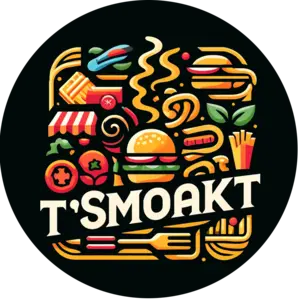
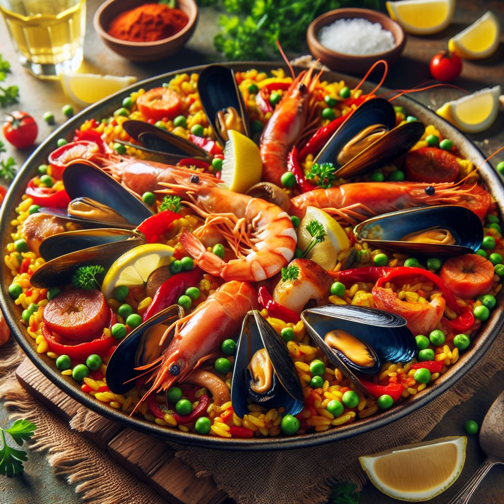
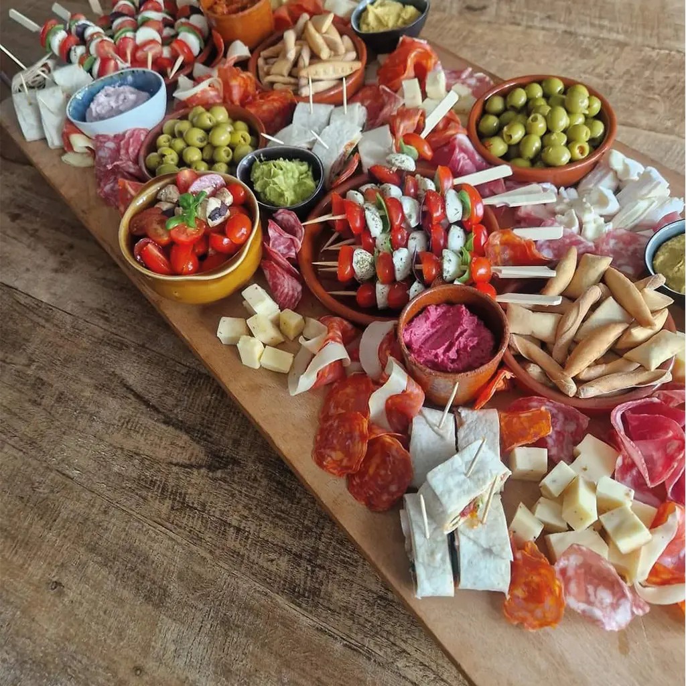

Vertel ons jouw plannen
Datum, locatie, aantal gasten en waar je zin in hebt.

T'SmoaktFoodtruck · catering · Moerbeke-Waas
Van sappige burgers en BBQ tot paella, tapas en verfijnde planken. Vers bereid en afgestemd op jouw feest.
Catering met karakter
Bij T'Smoakt geloven we dat goed eten mensen samenbrengt. Daarom werken we met verse ingrediënten, royale porties en formules die je vrij kan combineren. Jij geniet van je gasten, wij zorgen voor de rest.
Ons aanbod
Indicatieve prijzen worden centraal bijgewerkt. Voor jouw exacte formule ontvang je altijd een voorstel op maat.
Prijzen zijn indicatief en inclusief btw, tenzij anders vermeld. Minimumafname en eventuele verplaatsingskosten kunnen van toepassing zijn.

Meer dan een foodtruck
Een intiem familiefeest, een bedrijfsevent of een groot tuinfeest? We combineren gerechten, houden rekening met dieetwensen en bouwen samen een formule die klopt.
Zo gaan we te werk
Datum, locatie, aantal gasten en waar je zin in hebt.
We stellen een heldere formule samen die past bij je feest.
Wij verzorgen de bereiding en presentatie. Jij bent bij je gasten.
Ons verhaal
Wat ooit startte als een hobby voor vrienden en familie, groeide uit tot T'Smoakt. Vandaag brengen we diezelfde warmte en goesting naar feesten groot en klein. Geen bandwerk, wel gerechten met zorg, vakmanschap en een flinke portie gezelligheid.

Klaar om te plannen?
Vertel ons kort wat je organiseert. We nemen persoonlijk contact op en bezorgen een voorstel op maat.